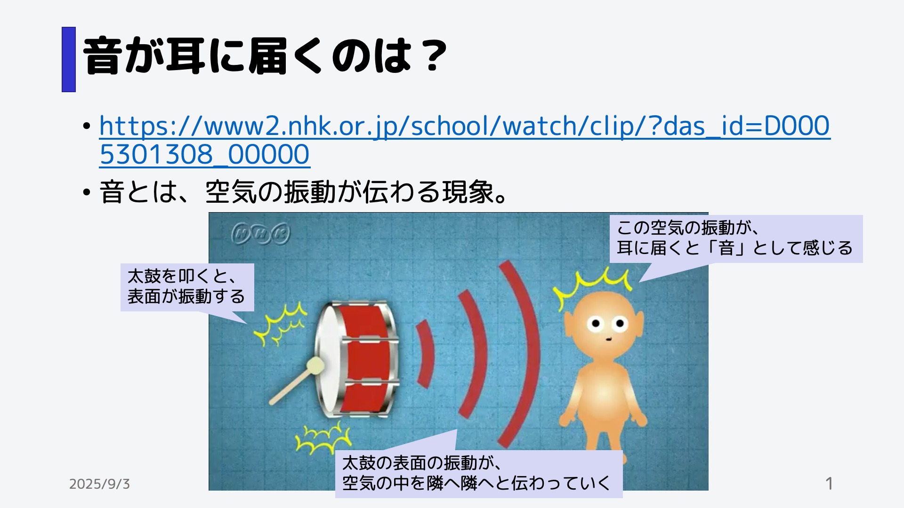
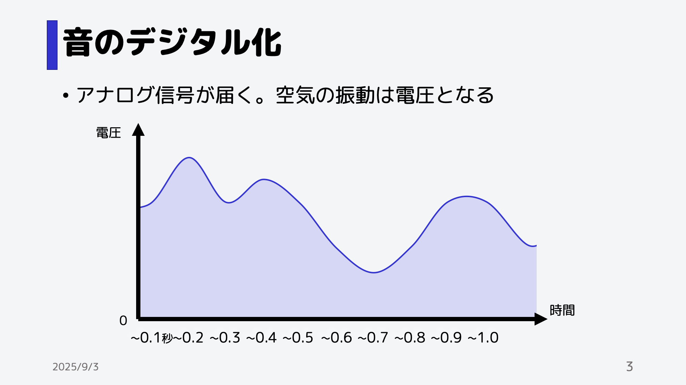
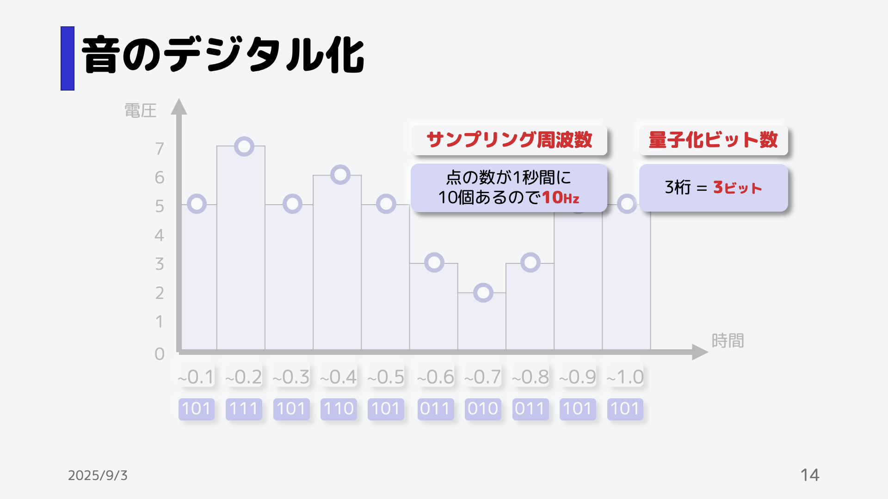
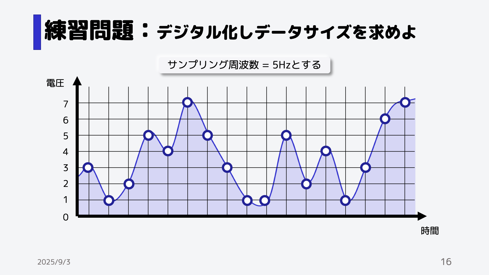
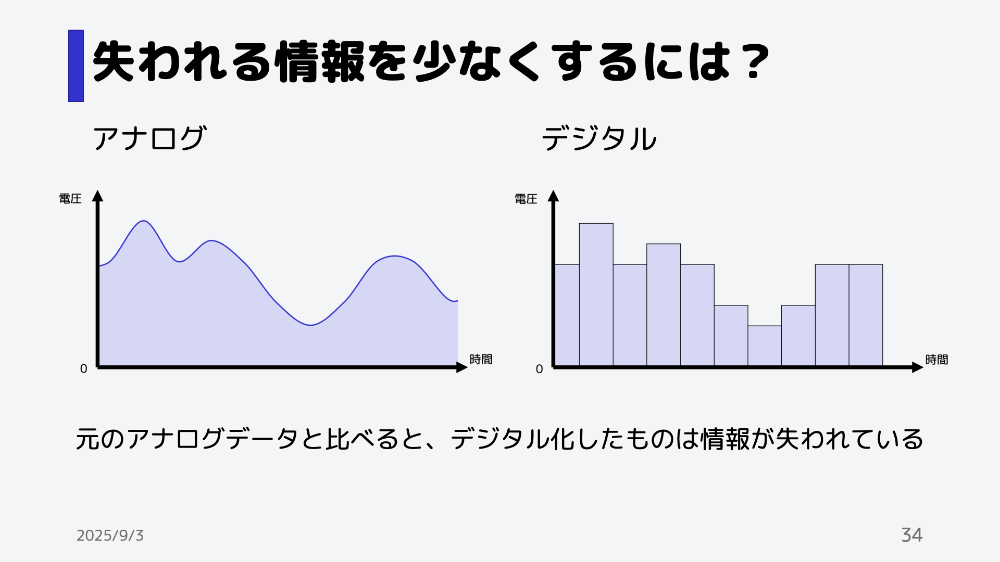
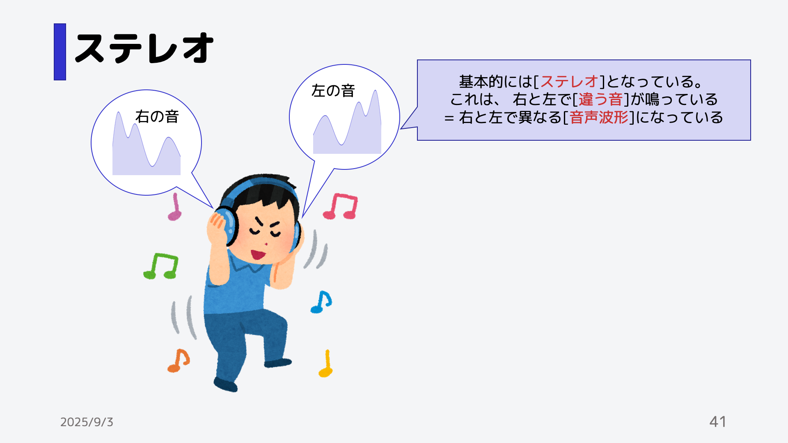

音質劣化再生テスト・波形表示
押すと音声が再生されます。音量に注意してください。
サンプリング周波数の削減
量子化ビット数の削減
ステレオ
音の仕組み
音のデジタル化
音声データサイズ
練習問題
失われる情報を少なくするには？
実際にサンプリング周波数を増減した音声を聞いてみよう。 サンプリング周波数の削減
実際にサンプリング周波数を増減した音声を聞いてみよう。 サンプリング周波数の削減
実際にサンプリング周波数を増減した音声を聞いてみよう。 サンプリング周波数の削減
実際に量子化ビット数を増減した音声を聞いてみよう。 量子化ビット数の削減
実際に量子化ビット数を増減した音声を聞いてみよう。 量子化ビット数の削減
実際に量子化ビット数を増減した音声を聞いてみよう。 量子化ビット数の削減
ステレオ
ステレオ音声" />実際にステレオ音声を聞いてみよう。 ステレオ音声